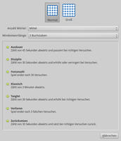
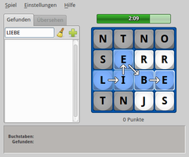
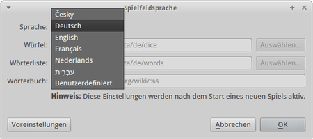

Tanglet
Dieser Artikel wurde für die folgenden Ubuntu-Versionen getestet:
Ubuntu 14.04 Trusty Tahr
Zum Verständnis dieses Artikels sind folgende Seiten hilfreich:
Tanglet  ist ein Spiel mit Wörtern, das dem Klassiker Scrabble ähnelt und unter dem Namen Boggle bekannt ist. Das Spielprinzip ist simpel: aus vorgegebenen Buchstaben müssen so viele Wörter wie möglich gebildet werden. Was sich zunächst einfach angehört, ist in der Praxis deutlich schwerer, denn man spielt gegen eine unerbittlich tickende Uhr.
ist ein Spiel mit Wörtern, das dem Klassiker Scrabble ähnelt und unter dem Namen Boggle bekannt ist. Das Spielprinzip ist simpel: aus vorgegebenen Buchstaben müssen so viele Wörter wie möglich gebildet werden. Was sich zunächst einfach angehört, ist in der Praxis deutlich schwerer, denn man spielt gegen eine unerbittlich tickende Uhr.
Tanglet ist plattformübergreifend verfügbar, der Quelltext frei erhältlich (Open Source) und der Programmautor Graeme Gott freut sich über jede Spende.
Installation¶
 Das Programm ist in den offiziellen Paketquellen enthalten. Folgendes Paket muss installiert [1] werden:
Das Programm ist in den offiziellen Paketquellen enthalten. Folgendes Paket muss installiert [1] werden:
tanglet (universe)
 mit apturl
mit apturl
Paketliste zum Kopieren:
sudo apt-get install tanglet
sudo aptitude install tanglet
PPA¶
Wer eine Version mit deutschen Wörtern und einer deutscher Programmoberfläche haben möchte (ab Version 1.2.1), muss das Programm aus dem "Personal Package Archiv" (PPA) [2] des Entwicklers installieren. Leider sind im PPA keine Pakete für Ubuntu 12.04 mehr enthalten.
Adresszeile zum Hinzufügen des PPAs:
ppa:gottcode/gcppa
Hinweis!
Zusätzliche Fremdquellen können das System gefährden.
Ein PPA unterstützt nicht zwangsläufig alle Ubuntu-Versionen. Weitere Informationen sind der  PPA-Beschreibung des Eigentümers/Teams gottcode zu entnehmen.
PPA-Beschreibung des Eigentümers/Teams gottcode zu entnehmen.
Damit Pakete aus dem PPA genutzt werden können, müssen die Paketquellen neu eingelesen werden.
Nach dem Aktualisieren der Paketquellen erfolgt die Installation wie oben angegeben.
Bedienung¶
Bei Ubuntu-Varianten mit einem Anwendungsmenü erfolgt der Programmstart [3] über den Menü-Eintrag "Spiele -> Tanglet". Unter Unity gibt man stattdessen den Programmnamen in der Dash ein. Beim Programmstart erfolgt eine Abfrage, welche Spielvariante benutzt werden soll. Wer sich nicht entscheiden kann, wählt "Klassisch" mit einer Spieldauer von 3 Minuten und einer Wortlänge von mindestens 3 Buchstaben.
|  |  |
| Auswahl der Spielvariante | Laufendes Spiel |
Wörter können durch die Auswahl der Buchstaben mit der Maus gebildet werden. Das Symbol  links neben dem Spielfeld dient zum Hinzufügen eines fertigen Worts zur Liste der gefundenen Wörter, während
links neben dem Spielfeld dient zum Hinzufügen eines fertigen Worts zur Liste der gefundenen Wörter, während  die markierten Buchstaben wieder deaktiviert. Einfacher funktioniert es über die Eingabe der jeweiligen Buchstaben auf der Tastatur und
⏎ zur Übernahme in die Wortliste. Mit
Strg +
⌫ macht man einen Versuch wieder rückgängig.
die markierten Buchstaben wieder deaktiviert. Einfacher funktioniert es über die Eingabe der jeweiligen Buchstaben auf der Tastatur und
⏎ zur Übernahme in die Wortliste. Mit
Strg +
⌫ macht man einen Versuch wieder rückgängig.
Das eingangs beschriebene Spielprinzip, möglichst viele Wörter aus den vorgegebenen Buchstaben zu bilden, wird nicht nur durch eine Zeitbegrenzung erschwert. Praktisch muss sich der nächste Buchstabe des jeweiligen Worts in direkter Nachbarschaft des vorhergehenden Buchstabens befinden (waagerecht, senkrecht oder diagonal). Die Richtung der Wortbildung (z.B. von unten nach oben oder umgekehrt) spielt dagegen keine Rolle. Die pro Runde zufällig ausgewählten Buchstaben, deren Anzahl in Abhängigkeit von der Spielfeldgröße variieren kann, können im Unterschied zu Scrabble mehrmals verwendet werden. Gefundene Worte werden als Liste gespeichert und erlauben nach Ablauf des Zeitlimits eine Bewertung. Die erreichte Punktzahl setzt sich aus der Anzahl der gefundenen Wörter und der jeweiligen Wortlänge zusammen. Das Programm führt automatisch eine Bestenliste (Highscore).
Nützlich für Einsteiger ist eine Liste der übersehenen Wörter, die nach Ablauf der Spielzeit eingesehen werden kann. Auf Wunsch können die hier aufgeführten Wörter im Wikipedia-Wörterbuch Wiktionary  nachgeschlagen werden (ältere Versionen verwenden noch Googles Wörterbuch, das im August 2011 eingestellt wurde). Aufgrund der zahllosen Besonderheiten und Sonderfällen der deutschen Sprache gelten zur Wortbildung folgende Regeln:
nachgeschlagen werden (ältere Versionen verwenden noch Googles Wörterbuch, das im August 2011 eingestellt wurde). Aufgrund der zahllosen Besonderheiten und Sonderfällen der deutschen Sprache gelten zur Wortbildung folgende Regeln:
generelle Grundlage ist der Duden
Ausnahmen:
Umlaute und Eszett müssen durch ihre Umschreibung angegeben werden
Diakritische Zeichen (Akzente) und Abkürzungen werden nicht berücksichtigt
Einstellungen¶
 Wenn die Sprache der Programmoberfläche nicht der eigenen Systemsprache entspricht oder eine andere gewünscht ist, kann "Einstellungen -> Anwendungssprache" verwendet werden. Anschließend muss das Programm neu gestartet werden. Von dieser Einstellung unabhängig ist "Einstellungen -> Spielfeldsprache", die als Grundlage für den verwendeten Wortschatz (
Wenn die Sprache der Programmoberfläche nicht der eigenen Systemsprache entspricht oder eine andere gewünscht ist, kann "Einstellungen -> Anwendungssprache" verwendet werden. Anschließend muss das Programm neu gestartet werden. Von dieser Einstellung unabhängig ist "Einstellungen -> Spielfeldsprache", die als Grundlage für den verwendeten Wortschatz ( 
 , in der aktuellen Version auch
, in der aktuellen Version auch 
 ) dient.
) dient.
|  |
| Spielfeldsprache |
Alle Einstellungen werden in der Datei ~/.config/GottCode/Tanglet.conf gespeichert.
 Programmübersicht
Programmübersicht- Erstellt mit Inyoka
-
 2004 – 2017 ubuntuusers.de • Einige Rechte vorbehalten
2004 – 2017 ubuntuusers.de • Einige Rechte vorbehalten
Lizenz • Kontakt • Datenschutz • Impressum • Serverstatus -
Serverhousing gespendet von